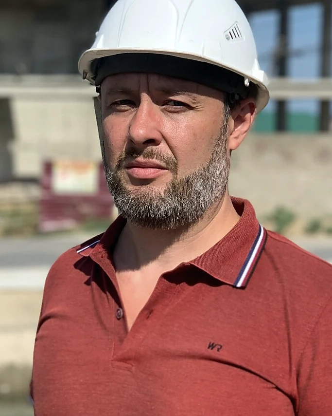
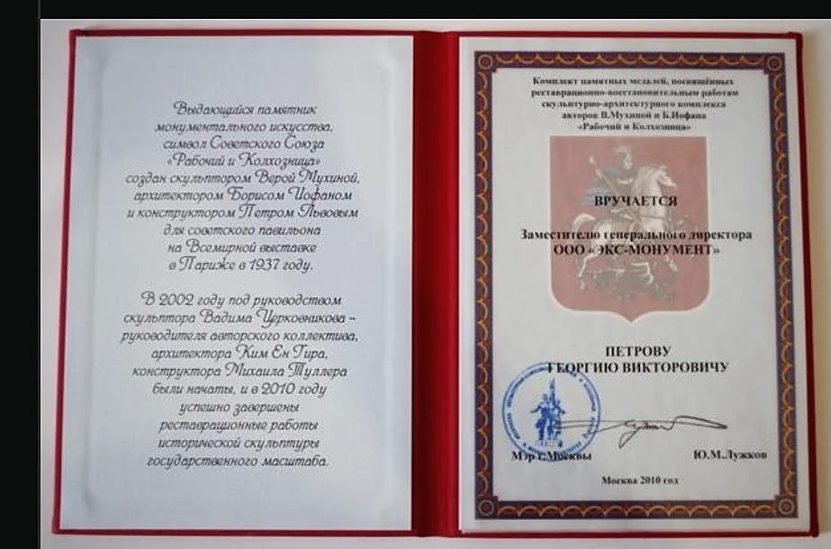
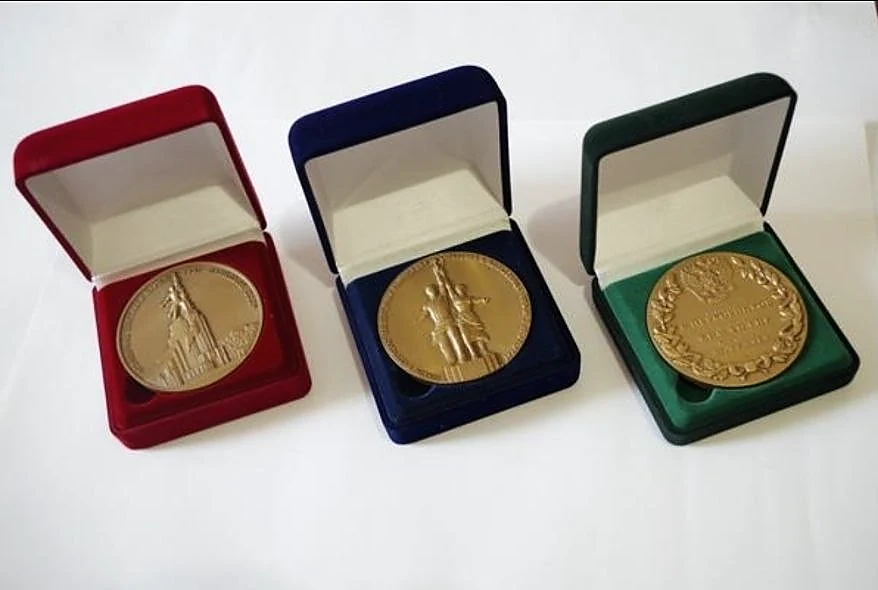

Георгий Петров
Опыт управления объектами, где техническая часть, деньги и сроки нельзя разделить.
Более 20 лет в строительстве: управление проектами, инженерными системами, реконструкцией, документацией, согласованиями и подготовкой к вводу.
Практика
Не кабинетная оценка, а работа с реальным ходом строительства.
Работа на сложных объектах требует одновременно держать техническую часть, документы, сроки, финансы, подрядчиков и диалог с заказчиком. Именно на этом стыке возникают основные риски — и принимаются решения, от которых зависит результат.
Опыт включает социальные и медицинские объекты, инженерную инфраструктуру, премиальную жилую застройку, реконструкцию и объекты культурного наследия.
Формат участия определяется задачей: независимая диагностика, управление критическим этапом, сопровождение инженерных систем, документации и ввода.

Профессиональные сведения
НРС НОСТРОЙ
Сведения внесены в Национальный реестр специалистов в области строительства. Идентификационный номер: .
Проверить запись в реестре ↗Признание
Профессиональные награды и подтверждающие материалы.
Дополнительные документы и награды — не замена практике, а её подтверждение.


Есть задача, в которой нужен внешний управленческий взгляд?
Опишите объект и ситуацию. На первом разговоре станет понятно, какие данные нужны и как лучше подключаться.